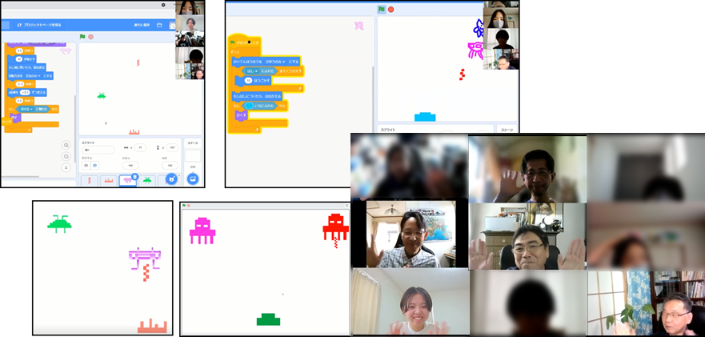

ニンジャ４名とメンター５名が参加しました。メンターには新たに「なつみ」さんが加わり、みんなと一緒にプログラミングを学習してまいります。最初に「インベーダーゲームをやったことある人～？」の質問に手を上げて回答してくれたニンジャは１名。想定通りの回答でありがたく、予定通りインベーダーの解説と動画の閲覧をしました。
メンター（とりさん）が事前に制作したPowerPointを使って、インベーダーの紹介とゲームのルールを説明してくれました。ちょっと難しいかなと思ったのですが、ニンジャのみなさん、しっかり説明を聞いていて、オリジナル性を含みつつ丁寧にゲーム作りを再現してくれました。
今日はプログラム例を提示せず各自でロジックを考えるため、時間をいつもより長めの75分にしてプログラミング作業を開始。ほとんどの子どもたちが最後まで完成できず悔しがっている様子でしたが、敵が左右に動く動作、砲弾の発射など、自分たちで一生懸命考えて・試して・改善して、を何度も繰り返してくれました。今回のゴールは「自分で考えたロジックを、実際に動かしてみて、考えた通りに動いたという成功体験を得る」なので、ゲームは完成しなくてもいいのです。

最後にメンターの作品も紹介。たくさん経験して、こんなに素敵なインベーダーも作りたいっと思ってもらえるよう、僕たちも学習をがんばります。
https://scratch.mit.edu/studios/28778405/）